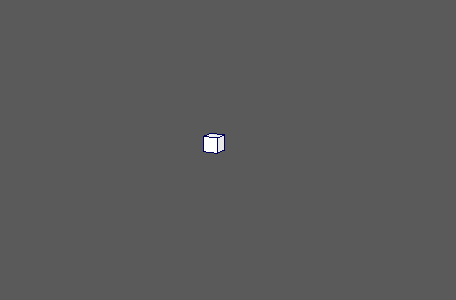

向现有动画添加弹簧。因此，需要已设置动画的 MASH 节点输入。
MASH 弹簧(MASH Spring)
-
弹簧强度(Spring Strength)
- 确定节点的整体效果。
-
最大平移(Maximum Translational)
- 确定弹簧效果的范围。 此值越大，对象在弹簧作用下移动的距离越远。
-
阻尼(Damping)
- 抑制弹簧效果。较高的值会导致弹簧更快速地稳定下来。
-
刚度(Stiffness)
- 确定弹簧效果的刚性。较小的值会导致更大的重叠。
-
阻尼变化(Damping Variation)
- 逐对象添加随机变化的阻尼值。
-
刚度变化(Stiffness Variation)
- 逐对象添加随机变化的刚度值。